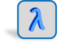
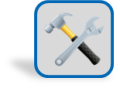

Windchill Risk and Reliability Modules

Each analysis module can function as a complete stand alone package, or it can be used in conjunction
with other modules to offer a custom solution.
Because all of the tools are built on a single, common platform, you can start with one or two modules,
and simply license and unlock additional modules as your needs grow.
There is no need to reinstall software, reconfigure your system, transfer data, or learn a new
interface.
Because Windchill Risk and Reliability products are built on a object-based architecture and share a
common database, integration is seamless.

formerly Relex Reliability Prediction
Provides a comprehensive, easy-to-use tool to estimate system reliability and MTBF (Mean Time Between
Failures).
Provides a structured methodology to identify the failure modes of a system, analyze their effects, and
introduce controls to improve product quality.
formerly Relex Fault Tree
Combines an intuitive graphical representation of fault trees and event trees with powerful analytical
tools to assess the risk and reliability of complex processes and systems.
Provides a flexible, comprehensive tool for controlling a range of closed loop corrective action
processes.
Combines intuitive reliability block diagramming tools, with powerful optimization and simulation
calculations to analyze the performance and lifetime costs of complex, real-world systems.
Combines intuitive reliability block diagramming tools, with powerful optimization and simulation
calculations to analyze the performance and lifetime costs of complex, real-world systems.
Combines intuitive reliability block diagramming tools, with powerful optimization and simulation
calculations to analyze the performance and lifetime costs of complex, real-world systems.
Combines flexible, intuitive diagramming tools with powerful analytical capabilities, enabling you
to model even the most complex systems and calculate their key reliability metrics.

formerly Relex Maintainability
Uses an industry-standard approach to organize maintainability analyses and calculate a full range
of maintenance related metrics.
Provides user-defined cost breakdown analysis throughout the life of a product, including design,
manufacturing, maintenance, and warranty.